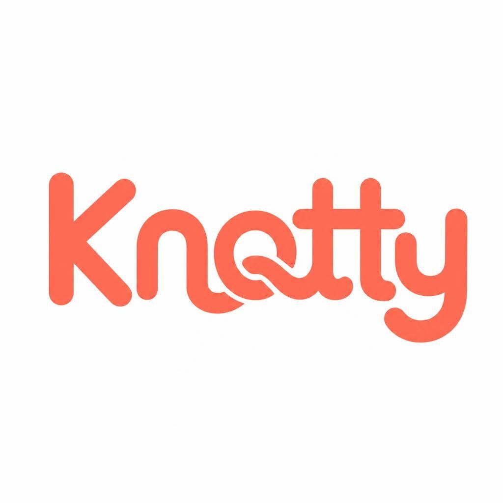
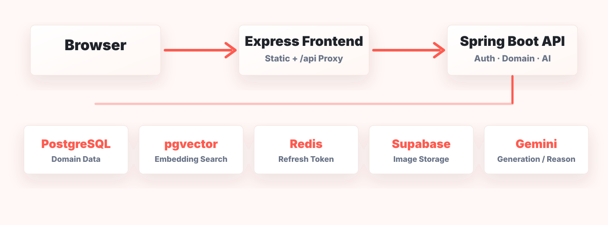
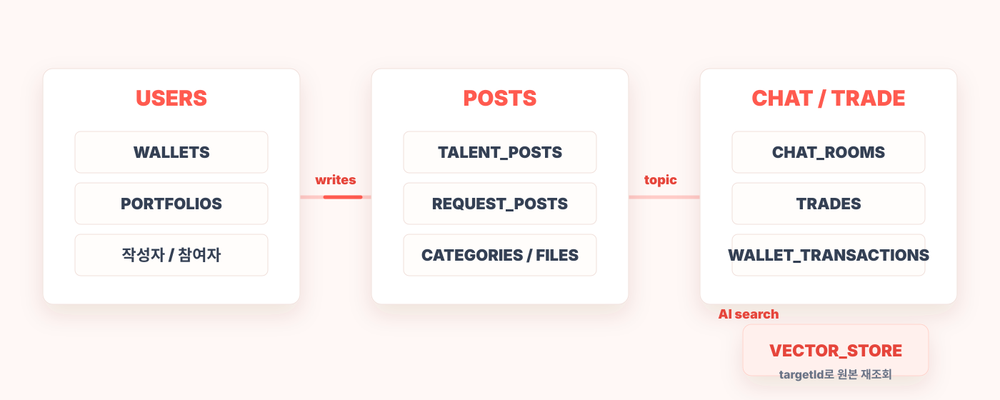

Team Project Presentation
매듭 짓다,
더 가까워지다
AI 검색에서 채팅, 거래 완료까지 이어지는 재능 거래 MVP
Team
팀 역할
인증, 포트폴리오, AI 매칭
재능글, 요청글, 임베딩,
AI 글생성
실시간 채팅, 거래, 지갑
Problem
주제
Service Flow
서비스 흐름
재능글
검색 → 채팅 → 판매자가 금액 설정 → 구매자가 결제 → 재능글 유지
요청글
검색 → 채팅 → 전문가가 금액 제안 → 작성자가 결제 → 요청글 마감
Architecture
시스템 아키텍처

ERD
ERD

VectorStore는 검색 후보 저장소이며 원본 데이터의 기준은 PostgreSQL입니다
Backend
백엔드 구현
Security
보안
브라우저 JavaScript가 토큰을 직접 관리
HttpOnly Cookie + CSRF Token + SameSite/Secure + CORS/CSP
Performance
성능 개선
Trade Integrity
거래 정합성
REQUEST POST · 1회성 거래
OPEN
→
IN_PROGRESS→
CLOSED
결제 시 요청글을 선점하고, 취소 시 다시 OPEN으로 복구합니다
TRADE · 결제 생명주기
PENDING
→
PAID→
COMPLETED
허용되지 않은 상태 전이는 엔티티에서 즉시 거절합니다
PESSIMISTIC_WRITE로 거래·요청글·지갑 변경을
순차 처리
중복 거래·중복 지갑 내역·잘못된 금액을
DB에서도 차단
Gemini·VectorStore 호출을 커밋 이후로 분리해
원본 트랜잭션을 보호
AI Matching
AI 매칭
사용자 검색어조건 분석Vector SearchSQL 검증추천 이유
LLM은 순위를 결정하지 않고, 서버가 고른 후보를 설명합니다
CI / CD
CI/CD
CONTINUOUS INTEGRATION검증
Push / PR
40 tests
23 tests
→
GitHub Actions→
Backend40 tests
→
Frontend23 tests
CONTINUOUS DELIVERY배포
검증 완료
Auto Deploy
→
RenderAuto Deploy
→
Health Check/health
PR과 feature push는 테스트로 검증하고, 커밋이 반영되면 Render가 백엔드·프론트엔드를 자동 배포합니다
Troubleshooting
트러블슈팅
SITUATION
리뷰 기능의 범위가예상보다 커졌다
→
DECISION
Review / ReputationMVP 제외
→
RESULT
검증 가능한 핵심 흐름에집중
재도입 조건거래 정책 확정 · 충분한 리뷰 데이터 · 추천 품질 비교 기준
Q&A
구현 근거와 예상 질문은 발표자 노트에서 확인